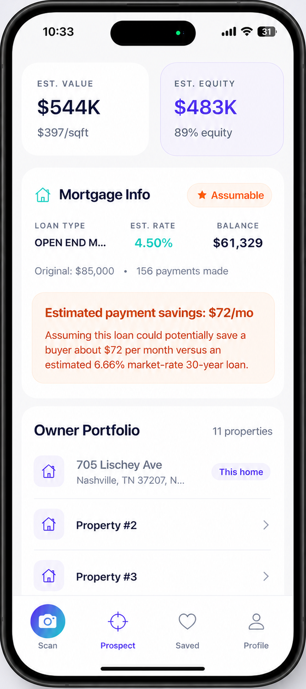

Equity & mortgage intel
See what they owe, what they own, and what it's worth.
Estimated equity, every other property they own, and the financing already in place — including whether a low-rate loan is assumable, and what that's worth to a buyer today.
- ✓Assumable-loan flag with estimated monthly savings versus today's rates
- ✓True equity position so you know how much room there is to negotiate
- ✓Owner portfolio — see every other property they hold and who to really call
4.50%Assumable rate
$72/moBuyer savings
11Owner's properties